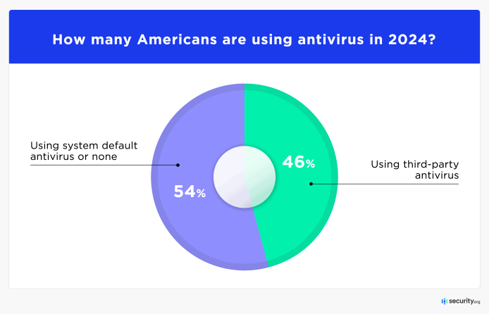
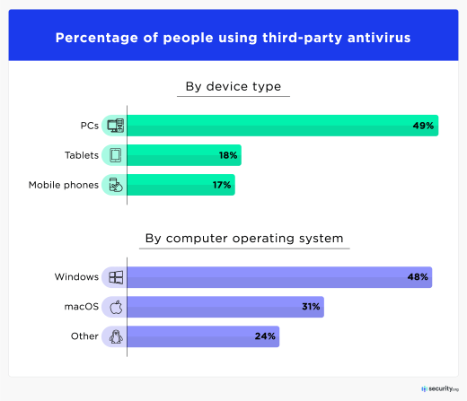

According to a recent report in 2024, nearly 50% of internet users in the US use an Anti-Virusw. This number has been clashing with the amount of people who have used their base anti-virus as industry benchmark has improved security.
Anti-Virus usage is dominantly PC with a 50 percent of anti-virus users. The next most is tablets followed by phones. The split between operating system is with windows with 48% and macos with 31% and 24% for the rest.
